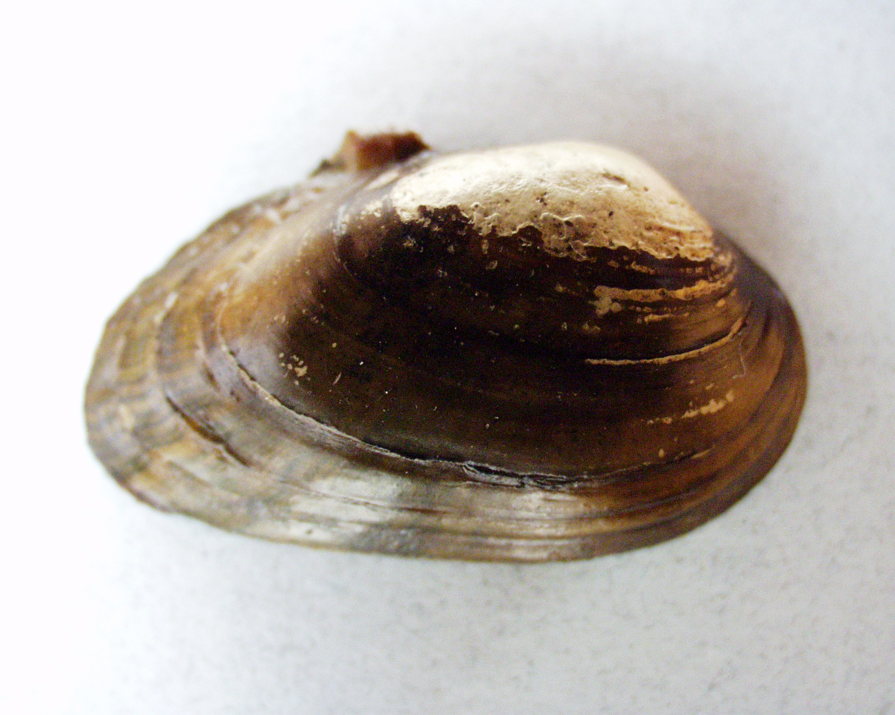
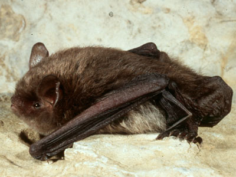
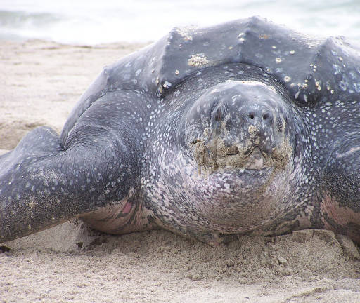
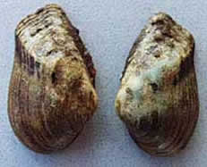
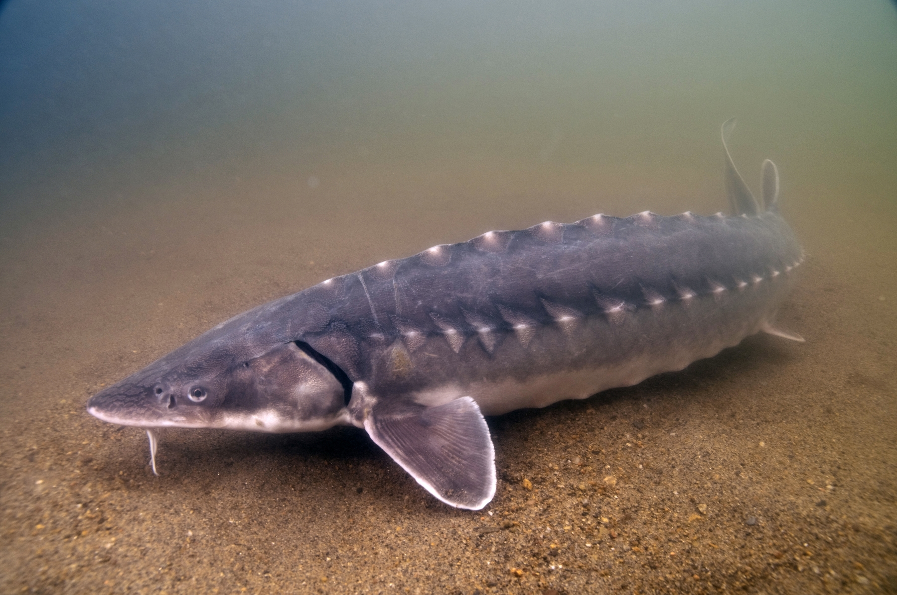

Endangered Animal Species of North Carolina
 |
Appalachian ElktoeScientific Name: Alasmidonta ravenelianaFound in Graham, Haywood, Henderson, Jackson, Macon, Mitchell, Swain, Transylvania, Yancey, and counties. |
 |
Atlantic SturgeonScientific Name: Acipenser oxyrinchus oxyrinchusFound in Beaufort, Bertie, Bladen, Brunswick, Camden, Carteret, Chowan, Columbus, Craven, Currituck, Dare, Gates, Halifax, Hertford, Hyde, Martin, New Hanover, Onslow, Pamlico, Pasquotank, Pender, Perquimans, Pitt, Richmond, Tyrell, and Washington counties. |
 |
Cape Fear shinerScientific Name: Notropis mekistocholasFound in Chatham, Harnett, Lee, Moore, and Randolph counties. |
 |
Carolina Northern Flying squirrelScientific Name: Glaucomys sabrinus coloratusFound in Avery, Buncombe, Caldwell, Graham, Haywood, Henderson, Jackson, McDowell, Mitchell, Swain, Transylvania, Watauga, and Yancey counties. |
 |
Carolina heelsplitterScientific Name: Lasmigona decorataFound in Mecklenburg, Richmond, and Union counties. |
|  | Cumberland Bean PearlymusselScientific name: Villosa trabalisFound in Cherokee county. |
 |
Dwarf wedgemusselScientific Name: Alasmidonta heterodonFound in Franklin, Granville, Halifax, Johnston, Nash, Orange, Person, Vance, Wake, Warren, and Wilson, counties. |
 |
Gray BatScientific Name: Myotis grisescensFound in Buncombe, Haywood, Madison, Swain, and Transylvania counties. |
 |
Hawksbill Sea TurtleScientific Name: Eretmochelys imbricataFound in Beaufort, Brunswick, Carteret, Currituck, Dare, Hyde, New Hanover, Onslow, Pamlico, and Pender counties. |
|  | Indiana BatScientific Name: Myotis sodalisFound in Cherokee, Graham, Haywood, Rutherford, and Swain counties. |
 |
James spinymusselScientific Name: Pleurobema collinaFound in Caswell, Rockingham, and Stokes counties. |
 |
Kemp's Ridley Sea TurtleScientific Name: Lepidochelys kempiiFound in Beaufort, Brunswick, Carteret, Currituck, Dare, Hyde, and Pamlico counties. |
|  | Leatherback Sea TurtleScientific Name: Dermochelys coriaceaFound in Beaufort, Brunswick, Carteret, Craven, Currituck, Dare, Hyde, New Hanover, Onslow, Pamlico, and Pender counties. |
|  | Littlewing pearlymusselScientific Name: Pegias fabulaFound in Macon and Swain counties. |
 |
Red WolfScientific Name: Canis rufusFound in Beaufort, Dare, Hyde, Tyrrell, and Washington counties. |
 |
Red-Cockaded woodpeckerScientific Name: Picoides borealisFound in Anson, Beaufort, Bertie, Bladen, Brunswick, Camden, Carteret, Chatham, Columbus, Craven, Cumberland, Currituck, Dare, Duplin, Edgecombe, Forsyth, Gates, Greene, Halifax, Harnett, Hertford, Hoke, Hyde, Johnston, Jones, Lee, Lenoir, Montgomery, Moore, Nash, New Hanover, Northampton, Onslow, Pamlico, Pender, Pitt, Richmond, Robeson, Sampson, Scotland, Tyrrell, Wake, Washington, wayne, and Wilson counties. |
 |
Roanoke LogperchScientific Name: Percina rexFound in Caswell, Forsyth, Rockingham, and Stokes counties. |
 |
Roseate TernScientific Name: Sterna dougallii dougalliiFound in Carteret and Dare counties. |
 |
Saint Francis' Satyr butterflyScientific Name: Neonympha mitchellii francisciFound in Cumberland and Hoke counties. |
|  | Shortnose SturgeonScientific Name: Acipenser brevirostrumFound in Anson, Bertie, Bladen, Brunswick, Camden, Carteret, Columbus, Currituck, Dare, Hyde, New Hanover, Onslow, Pamlico, Pasquotank, Pender, and Richmond counties. |
 |
Spruce Fir Moss SpiderScientific Name: Microhexura montivagaFound in Avery, Buncombe, Caldwell, Haywood, Jackson, Mitchell, Swain, Watauga, and Yancey counties. |
 |
Tar River spinymusselScientific Name: Elliptio steinstansanaFound in Edgecombe, Franklin, Halifax, Johnston, Nash, Pitt, and Warren counties. |
 |
Virginia Big-Eared BatScientific Name: Corynorhinus townsendii virginianusFound in Avery, Caldwell, and Watauga counties. |
 |
West Indian ManateeScientific Name: Trichechus manatusFound in Beaufort, Bertie, Brunswick, Camden, Carteret, Chowan, Craven, Currituck, Dare, Hyde, New Hanover, Onslow, Pamlico, Pasquotank, Pender, Perquimans, Pitt, Tyrell, and Washington counties. |